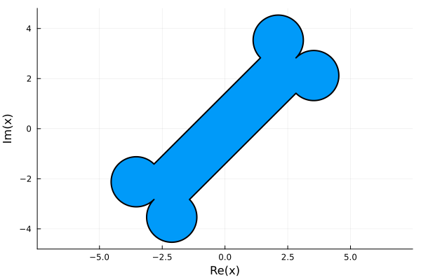
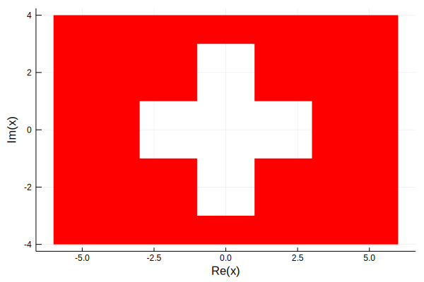
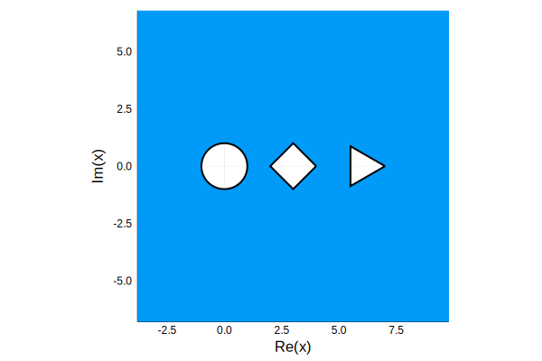

Regions
A region is the open set on one side of a closed curve or closed path.
Abstract interface
An AbstractRegion is expected to provide the following methods. Here R is an AbstractRegion and z is a number.
| Method | Description |
|---|---|
boundary(R) | Boundary curve(s)/path(s) of a region. |
in(z,R) | Determine whether z is in R. |
isfinite(R) | Determine whether the region is bounded. |
There are default implementations of the following methods.
| Method | Description |
|---|---|
intersect(R1,R2) or R1 ∩ R2 | Intersection of two regions. (Currently a stub for further development.) |
union(R1,R2) or R1 ∪ R2 | Union of two regions. (Currently a stub for further development.) |
There is also a parametric subtype AbstractConnectedRegion{N} used to represent a region of connectivity N. Any implementation is expected to provide the following methods.
| Method | Description |
|---|---|
outerboundary(R) | Curve/path of the outermost boundary, if it exists. |
innerboundary(R) | Curve(s)/path(s) of inner boundaries (that R is exterior to). |
Default implementations are provided for +, -, *, /, performing translation, rotation, and scaling.
AbstractSimplyConnectedRegion is an alias for AbstractConnectedRegion{1}.
Generic types
SimplyConnectedRegion
Type SimplyConnectedRegion is a union of parameterized types InteriorSimplyConnectedRegion{T} and ExteriorSimplyConnectedRegion{T}, where T is a subtype of a union of AbstractClosedCurve and AbstractClosedPath. The preferred method for constructing a value of one of these types is to use interior and exterior, respectively, with a closed curve or path as argument. If the given curve is bounded, these constructors ignore its orientation and select the bounded or unbounded region it defines, respectively. For an unbounded boundary curve, points "to the left" of it are considered the interior.
In addition to the methods of the Abstract interface, the SimplyConnectedRegion type provides the following methods.
| Method | Description |
|---|---|
!(R) | Complement of R. |
isapprox(R1, R2) | Determine whether R1 and R2 represent the same region. |
The SimplyConnectedRegion type is parameterized by the type of curve bounding it in order to facilitate dispatch. Notably included are the definitions
AbstractDisk = SimplyConnectedRegion{T} where T<:Circle
AbstractHalfplane = SimplyConnectedRegion{T} where T<:Line
PolygonalRegion = SimplyConnectedRegion{Polygon}There are also methods to facilitate construction of important common regions. For disks there are
disk(C::Circle)disk(center, radius)unitdisk
For half-planes there are
halfplane(L::Line)upperhalfplanelowerhalfplanelefthalfplanerighthalfplane
ExteriorRegion
The parameterized type ExteriorRegion{N} represents a region lying exterior to N closed curves or paths. It is constructed by ExteriorRegion(inner), where inner is a vector of closed curves/paths. These are returned by innerboundary, and outerboundary returns nothing.
ConnectedRegion
The parameterized type ConnectedRegion{N} represents a region of connectivity N. You construct one by calling ConnectedRegion{N}(outer, inner), where outer (if given) is an outer boundary, possibly unbounded, and inner is a vector of disconnected inner boundary components. Some rudimentary checking is done that a valid region of connectivity N has been specified, but it should not be considered rigorous.
The particular case of a doubly connected region can be constructed by between(outer, inner), giving the two boundary components. The given orientation is ignored for any bounded component.
Specific subtypes
Annulus
An Annulus is the doubly connected region between two concentric circles. It is a subtype of AbstractConnectedRegion{2}. Construction is by Annulus(outer, inner), where Circle values are given explicitly, or by Annulus(outrad, inrad, center=0), giving the radii and optionally the center.
Examples
Here is a "dog bone" region.
a = Arc(-1,1,-1im);
right = Path([4+1im+a,4-1im-1im*a]);
s = Segment(-3+1im,3+1im);
p = ClosedPath([s,right...,-s,-right...]);
r = interior(exp(1im*pi/4)*p)
using ComplexPlots, Plots
default(linewidth=2,legend=:none)
plot(r)
Are you inspired by the Swiss flag?
box = [1-1im, 3-1im, 3+1im];
plus = Polygon([box; 1im*box; -box; -1im*box]);
r = between(rectangle(-6-4im, 6+4im), plus)
plot(r, color=:red, linewidth=0)
A multiply-connected exterior region:
c = Circle(0, 1)
t = n_gon(3)
s = n_gon(4)
plot( ExteriorRegion([c, 3+s, 6+t]) )